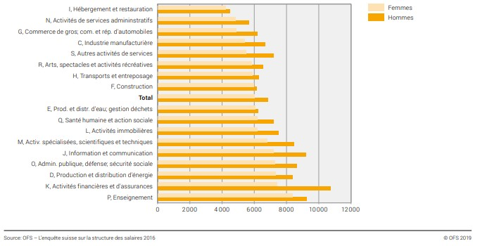

July 2, 2020
Salarios en Suiza.
Descubra aquí todo sobre los salarios en Suiza, los salarios mínimos y medios.
Suiza es uno de los países del mundo con el salario más atractivo, por lo tanto, un país muy popular para aquellos que buscan una vida mejor.
¿Suiza tiene un salario mínimo?
No hay salario mínimo en todos los cantones suizos. Algunos cantones tienen un salario mínimo,
otros no. Los cantones de Jura, Neuchâtel, Ticino y Ginebra son aquellos en los que existe un salario mínimo estipulado, que varía entre ellos.
| Cantón |
Salario Mínimo/hora |
Salario Mínimo/mes |
| Ginebra |
CHF 23 |
CHF 4153,8 |
| Neuchatel |
CHF 20,08 |
CHF 3626,45 |
| Jura |
CHF 20 |
CHF 3612 |
| Tesino |
CHF 19 |
CHF 3431,4 |
En relación a los cantones que no cuentan con un salario mínimo estipulado por ley, podemos decir que los salarios mínimos pagados por las empresas no varían mucho de los valores presentados anteriormente.
Aunque no hay un salario mínimo estipulado para la mayoría de los cantones,
para muchas áreas hay un salario mínimo estipulado por un convenio colectivo (GAV) en toda Suiza.
Por ejemplo en el campo de la construcción civil (obras) según
el convenio colectivo (LMV) el salario
base para un trabajador de la categoría c (la más baja) para algunos cantones es CHF 4573 mensual/CHF 25,95 por hora mientras
que para otros cantones el salario puede ser ligeramente superior con 4708 CHF mensuales/26,75 CHF por hora. Se abre aquí el convenio
colectivo en el área de la construcción civil.
También te pueden interesar los convenios colectivos para:
¡Encuentra otros contratos colectivos de trabajo aquí!
¿Cuál es el salario medio en Suiza?
Según
Swissinfo, el salario medio en Suiza es de CHF 6502 al mes o CHF 78 024 al año, ¡uno de los salarios medios más altos del mundo!
Una maestra de preescolar en Suiza gana CHF 4977, mientras que en EE. UU. el mismo profesional gana CHF 2400 al mes. Un vendedor/dependiente
de tienda gana alrededor de CHF 4.483 y un albañil con más de cuatro años de experiencia gana una media de CHF 5.553 al mes.
Pero no se deje engañar, Suiza es de hecho uno de los países con el salario promedio más alto del mundo, pero también es uno de los países con el costo de vida más caro del mundo.
¿Quiere saber el salario promedio para una determinada profesión en un determinado cantón?
El sitio de empleo más grande de Suiza tiene una herramienta donde puede averiguar el salario promedio de algunas profesiones según las personas registradas en el sitio, ¡vea aquí!
También puede ver el gráfico a continuación, de un estudio de 2016 del Bundesamt für Statistik que compara el salario bruto entre hombres y mujeres según la ocupación:
